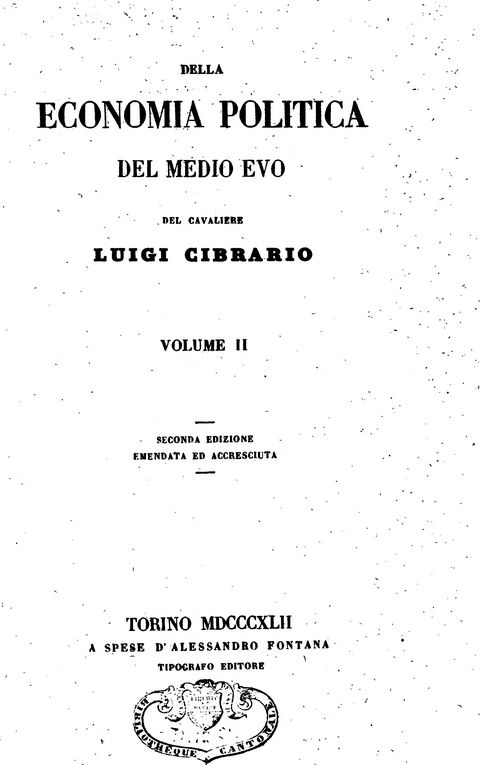
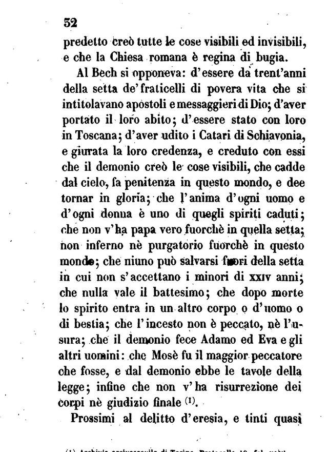
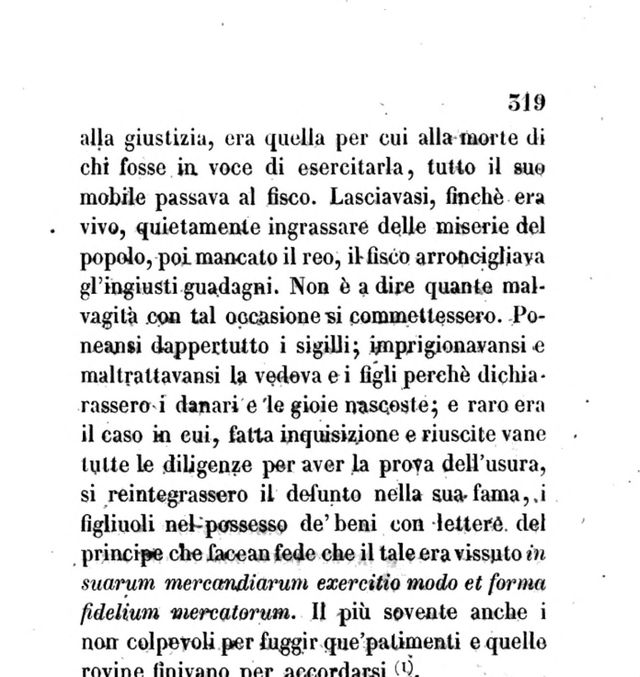

“Che l’incesto non è peccato, nè l’usura” (vol. II, pp. 50–52)

Italian: vol. II, book II, ch. 1, pp. 50–52, scans n35–n36; Cibrario’s note: “Archivio arcivescovile di Torino. Protocollo 19, fol. xlvi”. Highlighted: what Lecky reports.

[p. 50] I shall, however, record one [execution], which took place at Turin on Saturday the fifth of September 1388, to show by what forms proceedings were conducted and what errors were current in matters of faith. On that day, then, in the church of San Giovanni, Brother Antonio di Settimo of Savigliano, inquisitor of heretical depravity in upper Lombardy and the march of Genoa … [p. 51] declared Antonio Galosna of San Raffaele and Iacopo Bech of Chieri relapsed heretics, abandoning them to the secular arm to undergo the penalties incurred, handing them over to Pier Malabaila, vicar of Turin, and pronouncing besides the confiscation of their goods.
Relapsed heretics were those who fell back into the heresy they had abjured, and against these alone, or against those obstinate in their errors, the atrocious punishment of fire was used. …
[p. 52] Against Bech it was charged: that he had been for thirty years of the sect of the fraticelli of the poor life, who called themselves apostles and messengers of God; that he had worn their habit; that he had been with them in Tuscany; that he had heard the Cathars of Slavonia, sworn to their creed and believed with them that the Devil created visible things, that he fell from heaven, does penance in this world and must return to glory; that the soul of every man and every woman is one of those fallen spirits; that there is no true pope except in that sect; no hell nor purgatory except in this world; that no one can be saved outside the sect, into which no one under twenty-four is admitted; that baptism is worth nothing; that after death the spirit enters another body, of a man or of a beast; that incest is not a sin, nor usury; that the Devil made Adam and Eve and the other men; that Moses was the greatest sinner there ever was, and had the tables of the law from the Devil; and finally that there is no resurrection of the body nor last judgment.
Original Italian
[p. 50] D’una tuttavia farò memoria, che si fece a Torino il sabato cinque di settembre del 1388, affine di mostrare con quali termini si procedesse e quali errori corressero in materia di fede. In quel giorno pertanto, nella chiesa di San Giovanni, frate Antonio di Settimo, di Savigliano, inquisitore dell’eretica pravità nella superior Lombardia e nella marca di Genova … [p. 51] dichiarò Antonio Galosna di S. Raffaele e Iacopo Bech di Chieri eretici relapsi, abbandonandoli al braccio secolare perchè soggiacessero alle pene incorse, consegnandoli a Pier Malabaila vicario di Torino, e pronunciando inoltre la confisca de’ loro beni.
Eretici relapsi erano chiamati quelli che ricadevano nell’eresia abiurata, e contra questi soli, o contra gli ostinati ne’ loro errori adoperavasi l’atroce supplizio del fuoco. …
[p. 52] Al Bech si opponeva: d’essere da trent’anni della setta de’ fraticelli di povera vita che si intitolavano apostoli e messaggieri di Dio; d’aver portato il loro abito; d’essere stato con loro in Toscana; d’aver udito i Catari di Schiavonia, e giurata la loro credenza, e creduto con essi che il demonio creò le cose visibili, che cadde dal cielo, fa penitenza in questo mondo, e dee tornar in gloria; che l’anima d’ogni uomo e d’ogni donna è uno di quegli spiriti caduti; che non v’ha papa vero fuorchè in quella setta; non inferno nè purgatorio fuorchè in questo mondo; che niuno può salvarsi fuori della setta in cui non s’accettano i minori di XXIV anni; che nulla vale il battesimo; che dopo morte lo spirito entra in un altro corpo o d’uomo o di bestia; che l’incesto non è peccato, nè l’usura; che il demonio fece Adamo ed Eva e gli altri uomini; che Mosè fu il maggior peccatore che fosse, e dal demonio ebbe le tavole della legge; infine che non v’ha risurrezione dei corpi nè giudizio finale.
Galosna, the other condemned man, was charged (p. 51) with teaching that the lord of heaven and earth is the dragon, the evil principle, stronger than the God of heaven, and that the Virgin conceived by St Joseph. Cibrario’s phrase “D’una … farò memoria” introduces the case as an example of the rigorous “esecuzioni” of the fifteenth century and earlier; whether the two men were in fact burnt is not stated on these pages.
“Tutto il suo mobile passava al fisco”: the usurer’s goods at death (vol. III, pp. 318–319)
Italian: vol. III (Turin 1842), p. 319, scan; the sentence begins at the foot of p. 318 (not read). Cibrario’s note: “Lettere d’Amedeo VII dell’8 aprile 1387. Conto del tesoriere generale.” Highlighted: what Lecky reports.

[…] was the one by which, at the death of anyone reputed to practise it [usury], all his movable goods passed to the treasury. He was left, while he lived, to grow fat in peace on the miseries of the people; then, once the culprit was gone, the treasury clawed back the unjust gains. There is no telling how many wicked acts were committed on these occasions. Seals were put on everything; the widow and children were imprisoned and ill-treated to make them declare the hidden money and jewels; and it was rare that, after an inquiry in which every effort to prove usury had failed, the dead man was restored to his good name and the children to possession of the goods, by letters of the prince certifying that he had lived “in the exercise of his trade in the manner and form of faithful merchants”. Most often even the innocent, to escape those sufferings and that ruin, ended by coming to terms.
Original Italian
[…] era quella per cui alla morte di chi fosse in voce di esercitarla, tutto il suo mobile passava al fisco. Lasciavasi, finchè era vivo, quietamente ingrassare delle miserie del popolo, poi mancato il reo, il fisco arronciugliava gl’ingiusti guadagni. Non è a dire quante malvagità con tal occasione si commettessero. Poneansi dappertutto i sigilli; imprigionavansi e maltrattavansi la vedova e i figli perchè dichiarassero i danari e le gioie nascoste; e raro era il caso in cui, fatta inquisizione e riuscite vane tutte le diligenze per aver la prova dell’usura, si reintegrassero il defunto nella sua fama, i figliuoli nel possesso de’ beni con lettere del principe che facean fede che il tale era vissuto in suarum mercandiarum exercitio modo et forma fidelium mercatorum. Il più sovente anche i non colpevoli per fuggir que’ patimenti e quelle rovine finivano per accordarsi.
Lecky (ch. VI, note 40) gives the policy a cynical rationale: “the government might borrow money from the usurer” while he lived, and seize it from his children when he was dead. Cibrario puts the stress elsewhere, on the widows and children imprisoned and the innocent forced to pay.
Further down the rabbit hole
Sources that Lecky cites in the notes next to the ones that cite this page.
- Blanqui, Histoire de l’économie politique en EuropeHow medieval kings policed luxury, and what Florence spent
- Lamet and Fromageau, Dictionnaire des cas de conscienceThe Sorbonne answers: three per cent is usury, and every actor is in mortal sin
- Buckle, History of Civilization in EnglandWeather, superstition and the town (pp. 344–347)
- Macpherson, Annals of CommerceMacpherson’s 1346 consul footnote is not about English consuls
- Montesquieu, De l’esprit des lois, XXI, 20Lecky’s half sentence on scholastics and princes
- Raoul-Rochette, Cours d’archéologieWhy Greek statues were naked: “God is naked”, and emperors stripped for apotheosis
Backlinks
Every place in Rationalism in Europe that links to this page (generated automatically when the site is built).